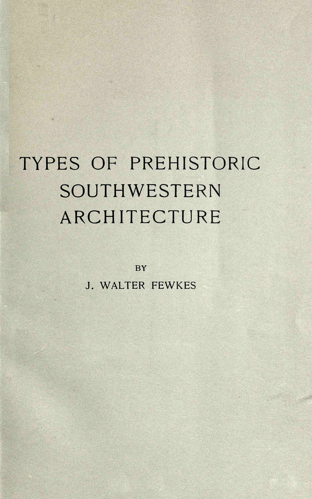

American Antiquarian Society
BY
J. WALTER FEWKES
Reprinted from the Proceedings of the American Antiquarian Society for April, 1917.
WORCESTER, MASSACHUSETTS, U.S.A.
PUBLISHED BY THE SOCIETY
1917
[Pg 2]
The Davis Press
Worcester, Mass.
[Pg 3]
TYPES OF PREHISTORIC SOUTHWESTERN ARCHITECTURE
By J. Walter Fewkes
Among primitive peoples the calendar, sun worship and agriculture are closely connected. When man was just emerging from the hunting or fishing stages into early agricultural conditions it rarely happened that he replanted the same fields year after year, for it was early recognized that the land, however fertile, would not yield good crops in successive years but should lie fallow one or more years before replanting. The primitive agriculturist learned by experience that a change was necessary to insure good crops. To effect this change the agriculturist moved his habitation and planted on the sites where the soil was found to be fertile. There was thus a continual shifting of planting places which accounts in part for frequent migrations. In our Southwest this nomadic condition was succeeded by a stationary agricultural stage. Necessary water was supplied by irrigation which also contributed nourishment necessary for the enrichment of the soil. When an agricultural population is thus anchored to one locality, permanent, well-constructed habitations are built near farms that are tilled year after year.
The following ideas on the relation of agricultural people, the calendar and sun worship were practically adopted from Mr. E. J. Payne’s “History of the New World called America.”
It is obligatory for the agriculturist, especially when the country is arid, to have a reliable calendar; he must know the best time for planting that the seeds may germinate, the epoch when the rains are most abundant[Pg 4] that the plants may grow, and the season when the hot sun may mature the growing corn. Agricultural life necessitates an exact calendar.
Several methods are used by the primitive agriculturist to determine the time for planting, the most reliable of which is the position of the sun and moon on the horizon rising or setting. The movements of the latter, especially the phases of the new moon, although important, do not serve as the best basis of the annual calendar. The time of the year cannot be told by observations of the moon. The phases of the moon play a certain rôle among agricultural people, since this planet takes a subordinate place in determining the calendar. The positions of the sun, or the points of its rising and setting on the horizon and its altitude at midday, afforded the primitive agriculturist data that could be relied upon from year to year to determine the season. The position of the sun at midsummer and midwinter, rising or setting, is associated with most important events; the winter solstice indicates the time when the fields should be prepared for cultivation; when the irrigating ditches should be cleared out and prepared for planting. We consequently find the winter solstice, which occurs at the close of December, is practically set aside by all agricultural people as an occasion of a great festival in which sun-worship is dominant. At this time we also find a complicated ceremony, the object of which is to draw back the sun and prepare the people for the work before them. Around this midwinter festival were crowded rites of the purification of the earth from evil influences of winter, a dramatic personation of the return of the sun god, preliminary to the call to the husbandman to begin his work. The planting itself occurs somewhat later, or when the sun reaches the vernal equinox, the determination of which is less important than the solstice.
When agricultural man had discovered a reliable calendar and was able to definitely determine the[Pg 5] time for planting, growth, and harvesting of his crops, his life became still more rigidly fixed in sedentary conditions; he no longer was a hunter or shepherd; he ceased to have a nomadic tendency. The consciousness of being able to rely upon a definite food supply expresses itself in the art of building. He is led to construct more durable habitations. Successful agriculture, stable architecture, and a reliable calendar are thus closely connected. The most successful agriculture in aboriginal North America is found in regions where knowledge of the calendar was most highly developed. Early efforts to perfect the calendar by studies of the sun intensified sun worship. The most highly developed expressions of solar worship as well as the best constructed masonry on the American continent are associated with the highest development of the calendar. There can be adduced no better illustration than the masonry of Peruvian temples which compares favorably with any in the world. The surface ornamentation of these buildings is not as elaborate as in those of Central America, but there are few examples of masonry in the Old World with stones more accurately fitted together, the walls more enduring—a remarkable fact when we consider that the people who built these colossal structures in the New World were unfamiliar with the metals, iron and steel. Sun worship is the basis of the ancient Peruvian culture expressed by these extraordinary buildings. Although our knowledge of Peruvian calendric signs is not as accurate as of that of Central America, all evidence goes to show that the calendar of the Incas was not inferior to that of the Mayas.
In prehistoric North America we find remains of buildings constructed of masonry quite equal to that of the same epoch in the Old World. This may be illustrated by reference to the cliff-dwellers’ towers in our Southwest. If some of the towers of Sardinia were placed side by side with those of southwestern[Pg 6] Colorado, any impartial observer would say that the masonry in the latter was equal to that in the former. The megalithic dolmens of England exhibit no walls superior in masonry to massive walls in the mountain canyons of Utah and Arizona constructed before the advent of the whites. In other words it is evident that the architecture of a people is not wholly an index of stage of culture. If the prehistoric aborigines of our Southwest be judged by buildings we may say they had progressed in historic development into a stage attained by nations more advanced because they were acquainted with metals.
The prehistoric people of our Southwest called pueblos and cliff-dwellers constructed many different forms of rooms which can be compared and reduced to a few types. It is the object of the following pages to examine the morphology of these buildings.
It will be found on examination that these prehistoric buildings were constructed on certain universal lines, reproducing with startling similarity types which are world-wide. It will also be found that habitations or buildings devoted to certain utilitarian purposes have one form, while sacred buildings have another, following a law geographically widespread. Man shares with the animal a desire for protection for his family or food accumulated or awaiting consumption. This holds true among agricultural peoples whose food is cereal and can be stored indefinitely or prepared for use when necessary. It is not necessary to suppose that man learned the habit of storing food from bees and squirrels; the same needs produced the same habits. The earliest storage places adopted by man were caves, trunks of trees or pits dug in the earth, the first mentioned being the most common. The first step taken to improve this storage place was the construction of a wall to close the entrance to the cave or pit. A further modification, practically an expansion of this simple idea, led to the construction of an elaborate dwelling having rooms specialized for[Pg 7] different economical purposes within the shelter of the cave.
This same idea of protection led to another line of development in which the cave is wanting. The construction of a stone cairn in the open would also serve for protection of the food supply. Such a building, erected simply for storage, naturally drew about it subordinate rooms for dwellings, at first temporary in structure but later, as ability in stone-working improved, permanent buildings or community-houses of durable material. This second type of prehistoric building, erected independent of caves, evolved along lines different from the first; in forms of construction the two types are similar, but they differ as to sites; one became a cliff or cave dwelling; the other, what is called a village or pueblo.
Consider another line of development. The buildings we have already considered were erected primarily for the preservation and protection of material possessions. Man, in whatever stage, regards it as necessary to construct a building for religious purposes; in many instances this structure is nothing more than a row of upright stones enclosing an area devoted to his gods. No roof was considered necessary since the objects of worship were practically forces of nature. As time went on, priests or congregations gathered to perform rites within the circular or other areas, or in their neighborhood. These ceremonies rendered secrecy necessary. A priesthood developed with a systematic ritual, which had to be hidden from the eyes of the inquisitive by roofs and side walls, thus forming a building, from which developed the temple or sacred room. Subsequently other buildings were annexed for habitations of priests or laymen. A condition of this kind occurs in our prehistoric Southwestern architecture. The sanctuary in this region is a well-constructed circular building, of peculiar type. It was not a dwelling but a place of ceremonious worship. Habitations distinct from these[Pg 8] ceremonial rooms had walls so perishable that traces of them are hard to find, the sanctuary walls alone remaining as an indication of the building art of that period. A more advanced stage along this line of evolution was the addition of rooms with permanent walls to the base of the sanctuary, by which a union of two different kinds of buildings, sacred and secular, was brought about. These three lines of architectural development in our prehistoric Southwest verged in a parallel development into the same form, all starting from the rudest structure and culminating in an almost identical type, one the cave habitation, the other the storage room with its annex, and the third the sacred building or sanctuary, around which are clustered rooms for secular purposes. A combination of the three types, producing a composite cluster, gives us what is called the terraced community house or pueblo.
The term “pueblo,” signifying a village or town, was applied by Spanish explorers to Indian villages in our Southwest at the close of the sixteenth century. Certain other collections of houses, to which the word “rancherias” (ranches) was applied, were also mentioned, the distinction between the two being that the buildings of the latter were more widely scattered. At present we speak of pueblo and pueblo culture in a more exact way, and in a scientific discussion of the origin of this culture it is necessary to restrict the Spanish terms, or to define a pueblo from a cultural point of view. This leads to an enumeration of distinctive architectural features which characterize the two types.
The Spaniards, giving little attention to ruins in the country through which their route lay, confined the term “pueblo” to inhabited towns. These early travelers found the majority of these in a limited area along the Rio Grande or along the Little Colorado and in the mountains of what is now northern Arizona. There were wide expanses of country not visited by[Pg 9] the Spaniards, which we now know had at that time ruined buildings indicative of a past population, that are similar in form to those inhabited. We find on scientific examination evidence that the life in them was higher in development than in the villages seen by the explorers. Manifestly our subject must be so treated that all pueblos, whether uninhabited or inhabited, should be taken into account in morphological studies. On comparison of ruined pueblos with those inhabited in the sixteenth century certain identities in form are revealed, but there are found also radical differences showing degrees of culture. Indications exist that certain arts of the later pueblos have degenerated: the masonry is not so good and pottery, textiles, and other manufactured articles are inferior.
The accounts given by early Spanish chroniclers afford scanty information on details of arts, and historical documents are correspondingly imperfect. In consideration of the subject from the point of view of chronology, our knowledge must be derived, not from previous histories but from archeological remains that are fortunately very abundant through the whole region.
The simplest type of pueblo building, called the unit type, consists of one or more rectangular rooms and a circular chamber. This form passes imperceptibly into the linear type, a row of single rooms united by the side of one circular room midway in length. The linear type naturally may have single or multiple rooms, or it may be composed of one or more rows parallel with each other, the doorways opening on the same side or in the same direction. When the lines of rooms are double, and the doorways of each row open in opposite directions, we may designate this the double linear having external doorways. Linear ruins may be one or more stories high; when there is more than one story, doors or lateral openings are generally wanting. On the ground[Pg 10] floor, which is entered from the roof, the superimposed rooms have lateral passageways from the roof of the lower story.
A double row of buildings may be set in such a way that the doorways face each other, or four such rows may form a rectangle enclosing a court, which often lacks one side. Another type has the pyramidal form, made up of rooms crowded together with the superimposed stories opening in all directions.
Wholly different in form from the various linear types above enumerated are the circular buildings enclosing a central court on which the doorways of the lowest story open, and which those of the upper stories face.
Pueblos both ancient and modern can be placed in one or another of the above-mentioned types, although in some cases two of these types may be combined, making a composite building reaching a considerable size. In whatever type the pueblo is placed, the circular-form room also exists, either enclosed in the rows or free from the rows of secular rectangular chambers. The pyramidal, rectangular, and linear types are comparatively modern, having persisted to the present day, when many are inhabited; the circular type is confined wholly to ancient times and is no longer inhabited. Open pueblos are independent of cliffs as distinguished from those dependent or those built within caves. Dependent and independent buildings are morphologically the same, but the dependent or so-called cliff pueblos were not inhabited at the advent of the Europeans.
An examination of the main features of the groups above mentioned reveals certain common features, an enumeration of which still further defines the pueblo type. All have both the terraced and the community form. They are all accompanied by a sacred room of circular form compactly enclosed in the mass of building or built separate from it. If we examine the distribution geographically of the pueblo[Pg 11] type, ancient and modern, we find it limited to the area including the southern parts of Colorado, Utah, and the greater part of New Mexico, its highest development occurring in the mountains. It is preeminently limited to a plateau region, and theoretically we may suppose that it owes its peculiarities to the characteristic physiographic conditions of this environment. If we consider this type chronologically we find the oldest and best examples situated in the northern part of the area; the evidence is good that influence from that nucleus extended west and south, the architecture as we recede from the place of origin becoming inferior or losing some of its essential features, probably on account of contact with unrelated peoples. This modification and the accompanying departure from the type are especially marked in extensions that came in contact with people who constructed rooms compactly united, from southern Arizona, where environmental conditions show a great contrast to the mountain region in which the pueblo originated. The plains bordering the Gila and its tributaries are low and level, covered with a vegetation wholly different from that of the mountain canyons in which pueblo buildings originated. Climatically southern Arizona is very warm throughout the year; the mountains of Colorado are covered with snow from November to March, inclusive. These conditions have led in the former region to the separation of the dwellings or a more open life of the aborigines; the rooms are larger and not crowded together as in pueblos; the material used in their construction is also different; stone is not available; its absence led to the use of clay and mud as the only materials out of which man could construct his dwellings. Another powerful influence created architectural modifications in these two regions. In the mountains the village builders were beset on all sides by hostiles or nomads bent on plunder. It was here necessary for man to construct his building with a view to defense by concentration[Pg 12] of the rooms. The level plains of southern Arizona and the rivers with a constant flow of water brought about irrigation along the Gila, thus making possible a larger population. All these conditions, reflected in the character of the buildings in the southern region, as contrasted with the northern, have greatly modified the culture and sociological conditions of the aborigines of the two localities. In their extension their boundaries met each other and their contact has led to types of buildings with characters of both. In one locality, Hopi, the circular kiva has disappeared, and a rectangular room has taken its place. Both Hopi and Zuñi pueblos have descendants of the ancestral clans from the Gila still surviving, and there we find the pueblo type with rectangular kivas both enclosed in house masses and separated from them.
Offshoots of the mountain or pueblo culture following down the San Juan River penetrated to Hopi and settled at Walpi, shortly after which they were joined by clans from Little Colorado bringing Gila culture, as is recounted in legends still existing. The mountain culture introduced the terraced form of building and the kiva free from the house masses. But this kiva has a rectangular form due either to the configuration of the mesa top or to influences from the south, where the sacred room is rectangular and enclosed by dwellings. In a case of Zuñi we have the plain type or southern contingent predominating, the original settlement at Zuñi having been made by clans from the far south, which were later joined and modified by those from the north. Here we have at the present day the sacred room of rectangular shape hidden away among the dwellings. This was a secondary condition probably brought about by the influence of Catholic missionaries, who forced the Zuñi to abandon their sacred room in the courts of the town, and resort to secrecy to perform the forbidden rites. Both Hopi and Zuñi show in their architecture the influence of[Pg 13] two component stocks or peoples, a fact more strikingly brought out in their religious ceremonials.
The prehistoric center of pueblo culture origin is situated many miles distant from the area now inhabited by its survivals. When the Spanish travelers first came in touch with this unique condition of life, its center of origin was no longer inhabited. Legendary accounts still survive in the modern pueblos that they came from the north; our main source of information or proof of the truth of these legends is the character of architecture and pottery obtained from the northern ruins, aided by what may be gathered from the modified architecture of the inhabited pueblos, or from historical documents.
It is a universal characteristic of primitive men that the most enduring and best-constructed buildings are those devoted to worship. We find, for instance, throughout the Old World that the prehistoric structures of this kind which have survived as monuments of the past are temples, either in the form of rude monoliths or imposing buildings, the habitations of their builders having long since disappeared, as they were built of perishable material and their sites can now be detected only by low mounds.
Temples, however, were more lasting and work on them was cumulative; each generation improved on its predecessor, and as they were built of stone the additions of successive generations were permanent, and remained as an index of past civilization. The same is true among prehistoric pueblos of North America. They also erected dual buildings: one being a perishable habitation; the other the permanent religious building.
Let us consider the chronological evolution of these two types of architecture. In the very earliest condition the primitive people of the Southwest constructed a massive-walled building to serve for the performance of their rites and ceremonies. Each social group had its own sanctuary, which we now recognize as[Pg 14] the kiva, commonly built in the form of towers scattered throughout the mountainous regions of Utah and Colorado. As is customary with similar religious edifices, we find these, as a rule, perched on the tops of high cliffs, not for outlooks, but for conspicuous buildings for refuge of the neighboring population. In ancient Greece we find the temples of Cecrops, the ancient deity of Athens, on an Acropolis, and towering above Corinth is the Acrocorinth. Towers almost identical with those of Colorado occur in different localities in Europe. We find them, for example, in Ireland, in Spain, in Sardinia, and in Corsica, where they have received a different name, but are always associated with the very earliest inhabitants of those localities. In Peru we find the problematical chulpas. The function of these towers in both the Old and the New World has been a bone of contention among archeologists. The best explanation that has been advanced for Old World towers is that they are defensive and religious structures; the towers of the New World may have had a similar use, as they are alike in form. In other words, we may suppose that they also are religious structures, but we can add in support of that theory evidence not available in Europe, for we find that, the form of the tower is identical with that of the sacred room or kiva, and that it has survived to the present time as a special chamber for worship.
Having then determined that we can regard the oldest form of pueblo building as a religious structure, let us pass to the probable steps in the evolution from this early condition into the highest development of that strictly American type of habitation. It is evident, if the tower be looked on as the sanctuary of the clan, that the existence of two or more clans united would necessitate the same number of towers, a condition which we find repeated in the areas under consideration. Granted that the first step in the evolution of the pueblo would be the union of the[Pg 15] secular with the sacred room, this might be accomplished either by adding the tower to the group of dwellings, if the latter were situated in a cave, or by moving the habitations out of the cave and annexing them to the base of the tower. Both of these methods seem to have been adopted, resulting on the one hand in cliff-dwellings, and on the other in communal buildings in the open or on top of a plateau. Subsequent stages in the evolution of the pueblo consist in the enlargement because of the growth of the clan of the outlines of the dwelling clustered around the base of the tower until subsequently contiguous groups joined, making one village, composed of as many clans as there are architectural units. The sacred building lost its predominance in this enlargement, and the tower passed without morphological changes into the kiva. We can trace all these modifications in the canyons and plateaus of southwestern Colorado.
Sociological advance goes hand in hand with architectural complication. In the beginning the number of social units is indicated by the number of kivas; the next stage is the diminution in relative number of sacred rooms and other changes which appear in the relative size of the kivas. The several social units brought in such intimate contact naturally evolved a system of worship reflecting that union. This appears most clearly in the formation of a fraternity of priests to perform the ceremony resulting from consolidation, which leads to the abandonment of kivas rendered unnecessary, or to the fusion of several into one, and the enlargement of those remaining to accommodate the fraternity composed of men of several social units. This enlargement is shown at Far View House, a pueblo lately excavated in the Mesa Verde National Park, Colorado. The total population of this pueblo was probably as large as that of Cliff Palace, but whereas in this cliff dwelling we find twenty-three sacred rooms, in Far View House there are but four, one of which (the central) is four times as large as any[Pg 16] in Cliff Palace. It is easy to see why the central kiva in the pueblo is more centrally placed than the others, when we remember that it was probably the oldest, and was the first settled, and in subsequent growth of the village remained the predominant one of the group.
Following the lines of social evolution and architectural types considered in the preceding pages, we come now to a classification of buildings in the Southwest. Passing over the earliest expression of architecture, where a hut or dugout shows few peculiar features but practically is universal among a seminomadic people, we come to durable houses built of clay or stone. Even in these small buildings we recognize two types of rooms—circular and rectangular. We find two distinct types of village communities, one occupying the area extending from Utah to the inhabited pueblos on the Rio Grande. This group may be known in prehistoric culture by circular ruins and circular kivas. Here probably arose the original terraced form of building. The purest expression of its architecture occurs in cliff-dwellings like Cliff Palace and Spruce-tree House in the Mesa Verde National Park, but its extensions west and south are modified as the distance from the place of origin increases.
The second type of buildings in the Southwest arose in the Gila valley, and is best illustrated by Casa Grande in southern Arizona. From this nucleus extensions of architectural forms were carried northward and eastward to the pueblos now inhabited by Hopi and Zuñi Indians. A characteristic feature of this type is the massive-walled buildings surrounded by a rectangular wall or compound. The circular kiva and circular ruin do not exist in present forms of this type. Ruins in southern Arizona, belonging to this type, often have very much modified forms, especially as the type extended northward and came in contact with extensions of the pueblo culture.[Pg 17] Architectural characters and other features of this type show marked affinities with the corresponding culture of prehistoric peoples of Mexico.
The mythology and ritual of the people in this area are more closely related to Mexican than to northern or pueblo culture. This may be illustrated by many examples, of which one instance may be taken. One of the most marked peculiarities of the prehistoric culture in this zone is the elaborate worship of a supernatural being called the Horned Serpent.[1] The Horned Serpent cult was introduced into Hopiland from the Gila and is associated with the sky-god, whose symbol is the sun. Evidences of the widespread influence of this cult in prehistoric times is shown by figures of this being found on pottery all the way from Hopi to the Mexican plateau. Among the Maya and Aztec, when Horned Snake worship was perhaps the most complicated anywhere in pre-Columbian America, it was, as it is at Hopi, intimately associated with sun-worship. The Horned and Plumed Serpent figures adorn many prehistoric buildings of Mexico, and occur in all the codices of the Maya. Here we have the symbol not originally regarded as serpents. Kukulcan, or Quetzalcoatl, were but beneficent beings who taught the ancients agriculture and other arts, but whose benign presence was banished through the machinations of a sorcerer. The striking similarities in the objective symbolism of the Plumed Serpent of Mexican mythology and the Hopi Horned Serpent have been shown elsewhere; the ceremonies in which his effigy is used in the Hopi ritual are practically connected with sun-worship, and were introduced from the south. Wherever the influence of the architectural type above considered is detected we find evidences of Horned Serpent cult.
The most important rite at Walpi in which idols of this being are used occurs at the winter solstice and[Pg 18] the vernal equinox, and are always connected with a highly developed sun-worship. These appear as effigies, which in one ceremonial drama are carried by a being personating the sun; in other dramatic rites they are thrust through openings in a screen on which sun emblems are painted. An idol of the Horned Serpent, made of the giant cactus, a plant abundant in the Gila valley, is carried by the chief of the Sun priests’ ceremony celebrated in midwinter. Numerous other examples of the association of the sun and the Horned Serpent in the solar worship of the Hopi have been elsewhere described and might be mentioned to prove that the religious conception back of the Horned Serpent cult is the symbolical representation of a nature power of the sky or the sun. The conception typified by the Horned Snake cult of the Hopi and that of the Plumed Snake of Mexico is the same; that symbols of this being occur on prehistoric objects found in the region stretching from the Hopi country far into Central America cannot be questioned. Whether one was derived from the other or both were independently evolved is another question.
The ancient people of the pueblo type widespread throughout New Mexico and Colorado likewise used in their ceremonials a Plumed Serpent symbol, which has been identified as the Great Horned Snake. The cult of this being is also associated with sun-worship, but as the little we know of the symbolism of this being is derived from the winter solstice ceremony at the Tewa pueblo Hano and a few pictographs or paintings on Tewa pottery, it is not possible to hazard a conjecture regarding its teaching on culture derivation. The evidence, so far as it goes, supports the theory that a Sun Serpent cult like that of ancient Mexico exists in our Southwest today in a much more primitive form.
[1] In the Snake Dances of the pueblo region, we have more striking evidence of ancestor worship. The ceremonials in which the Horned Snake idols appear show a more elaborate sun-worship.